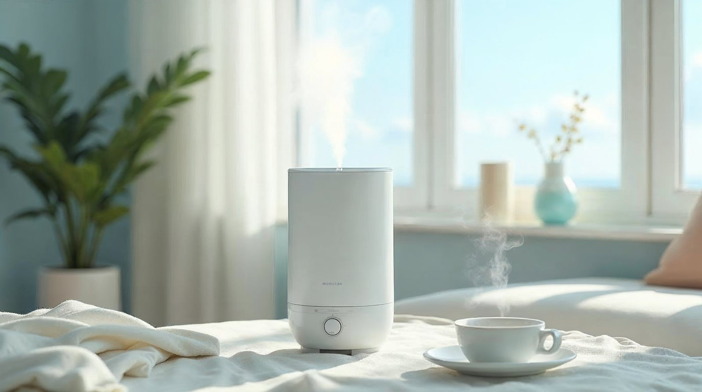
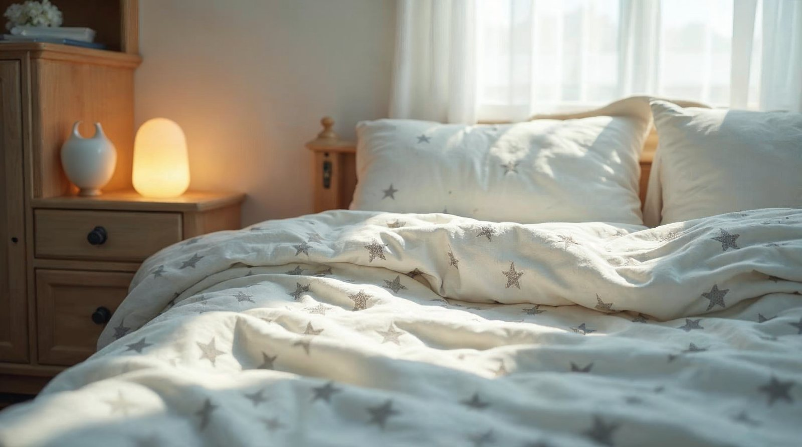
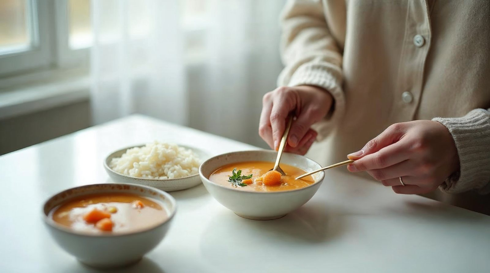
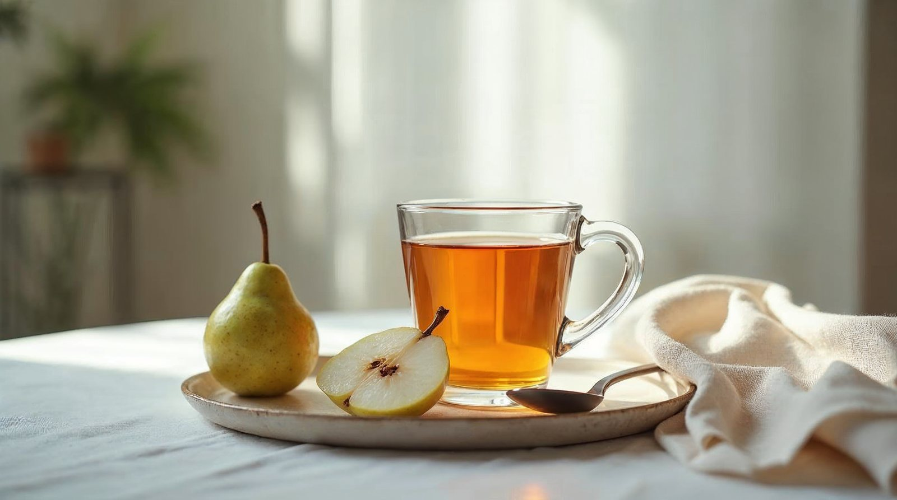
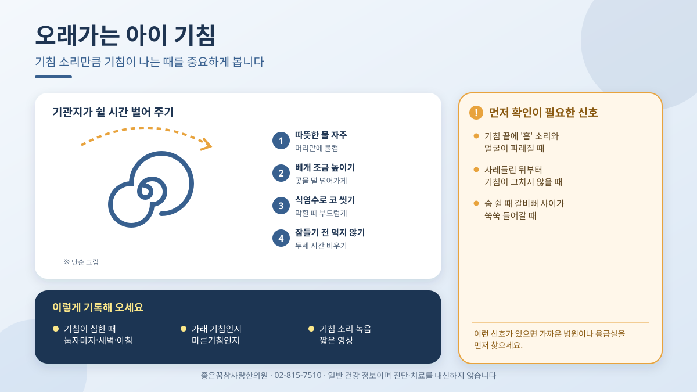

이종호 한의사 감수좋은꿈참사랑한의원 대표원장 (한의사 면허번호 19769)발행 2026-11-26 · 수정 2026-11-27
이 글의 차례
열은 진작 내렸고 콧물도 거의 멎었어요. 아이는 밥도 잘 먹고 잘 놉니다. 그런데 기침만은 남았습니다. 밤에 눕자마자 콜록콜록, 아침에 일어나서 또 콜록콜록. 벌써 3주째예요.
어린이집에서는 아직 감기냐고 묻고, 부모님은 약을 더 먹여야 하나, 다른 병원에 가 봐야 하나 하는 고민이 깊어지죠. 밤마다 기침 소리에 귀를 기울이느라 부모님 잠도 함께 얕아집니다.
진료실에서 가장 자주 듣는 아이 고민 가운데 하나가 이렇게 끝나지 않는 기침이에요. 아이는 괜찮아 보이는데 기침 소리만 들으면 마음이 편치 않으시잖아요. 약을 바꿔 봐도 잘 줄지 않으면 더 그렇고요.
그런데 감기 뒤 기침이 몇 주 남는 건 생각보다 흔해요. 감기 바이러스가 지나간 자리의 기관지와 코 점막이 아직 예민한 상태로 남아 있거든요. 큰비가 그쳐도 땅이 마르는 데는 며칠이 걸리는 것과 비슷해요.
대부분은 시간이 지나며 가라앉지만, 4주가 넘어가거나 기침의 모양이 달라진다면 다른 이유가 겹쳐 있지 않은지 살펴봐야 해요. '감기 끝에 남은 기침'과 '다른 이유가 붙잡고 있는 기침'은 다른 얘기니까요.
그래서 저는 오래가는 기침을 볼 때 기침 소리만큼 기침이 나는 때를 중요하게 봐요. 눕자마자 나는지, 새벽에 나는지, 뛰고 나서 나는지, 말을 많이 할 때 나는지에 따라 짐작되는 이유가 달라지거든요.
얼마나 이어지면 오래가는 기침이라고 하나요?
아이 기침은 대개 감기와 함께 시작해 1~2주 안에 줄어듭니다. 3주 가까이 남는 경우도 드물지 않아서, 이 시기를 감기 뒤 기침이라고 부르며 지켜보는 경우가 많습니다. 4주가 넘어가면 만성 기침으로 보고 이유를 조금 더 찾아봅니다.
기간만큼 중요한 것은 흐름입니다. 날마다 조금씩 줄어드는 기침이라면 기다려 볼 여유가 있습니다. 반대로 줄다가 다시 심해지거나, 새로운 열이 나거나, 기침 소리가 바뀌었다면 감기가 새로 왔거나 다른 문제가 겹쳤을 수 있어 진료를 받아 보셔야 합니다.
왜 감기 뒤에도 기침이 남을까요
감기 바이러스가 지나가면서 코와 목, 기관지의 안쪽 벽이 상처를 입습니다. 이 벽이 회복되는 데는 몇 주가 걸리고, 그동안은 찬 공기나 먼지, 말하기 같은 작은 자극에도 기침 신호가 쉽게 켜집니다. 열이 내리고 기운이 돌아온 뒤에도 기침만 남는 이유입니다.
코 뒤쪽으로 콧물이 넘어가는 것도 흔한 이유입니다. 코가 다 낫지 않아 끈적한 콧물이 목 뒤로 흘러내리면, 아이는 누웠을 때나 아침에 일어났을 때 가래 끓는 기침을 합니다. 낮에는 킁킁거리거나 헛기침을 자주 하기도 합니다.
한의학에서는 이런 기침을 두고 폐와 코에 남은 열이나 찬 기운, 그리고 회복하는 힘을 함께 봅니다. 마른기침이 이어지고 목이 마르며 얼굴이 쉽게 붉어지는 아이, 맑은 콧물과 함께 찬 공기에 기침이 터지는 아이, 기운이 없어 기침이 오래 늘어지는 아이는 같은 기침이라도 살피는 방향이 조금 다릅니다.
기침의 때와 소리는 무엇을 알려 주나요?
기침이 나는 때를 보면 이유를 짐작하는 데 도움이 됩니다. 정답처럼 나뉘는 것은 아니지만, 진료실에서는 이런 흐름을 참고합니다.
- 눕자마자, 그리고 아침에 일어나서 가래 끓는 기침: 코 뒤로 넘어가는 콧물
- 밤과 새벽에 마른기침으로 깸, 뛰고 나면 기침: 예민해진 기관지, 천식 쪽 확인
- 찬 공기를 마시거나 밖에 나가면 기침: 예민해진 기관지와 코
- 말을 많이 하거나 웃을 때 간질간질한 기침: 목의 예민함
- 먹고 나서 눕거나 밤에 신물과 함께 기침: 위의 내용물이 올라오는 경우
소리도 단서가 됩니다. 가래가 그렁그렁 섞인 기침인지, 쇳소리 같은 마른기침인지, 컹컹 울리는 기침인지 휴대폰으로 녹음해 오시면 말로 설명하는 것보다 훨씬 많은 것을 알 수 있습니다.
다른 이유를 함께 살펴볼 때
밤과 새벽, 운동 뒤 기침이 이어지고 가족 중 알레르기 질환이 있다면 기침형 천식을 생각해 볼 수 있습니다. 쌕쌕거림이 없어도 기침만으로 드러나는 경우가 있어 소아청소년과에서 숨소리와 필요한 검사를 확인받아 보세요.
콧물이나 낮 기침이 열흘 넘게 나아지지 않고 이어진다면, 콧물 색과 상관없이 부비동염이 겹쳤을 수 있습니다. 코막힘이나 입냄새가 함께 오기도 합니다. 이런 경우는 이비인후과나 소아청소년과에서 코 상태를 확인하고 치료를 받는 것이 우선입니다.
기침이 몰아쳐서 나오고, 기침이 끝날 때 숨을 몰아쉬거나 토할 정도라면 백일해 같은 감염도 확인해야 합니다. 예방접종 기록을 함께 가져가시면 진료에 도움이 됩니다.

집 안 환경이 기침을 붙잡고 있지는 않나요?
기침이 오래가는 아이의 집을 떠올려 보면 몇 가지가 자주 겹칩니다. 난방으로 공기가 너무 건조하거나, 반대로 너무 습해 곰팡이가 생긴 경우, 집 안이나 베란다에서 담배를 피우는 가족이 있는 경우, 이불과 인형에 먼지가 쌓인 경우입니다.
기관지가 회복 중인 아이에게 이런 자극은 기침 신호를 계속 켜 둡니다. 그래서 약만큼 환경을 함께 정리하는 것이 중요합니다. 하루 두세 번 짧게 환기하고, 아이 방의 인형과 쿠션은 줄이고, 이불은 자주 빨아 햇볕에 말려 주세요.
담배 연기는 피우는 자리에서 멀리 떨어져도 옷과 머리카락에 묻어 들어옵니다. 기침하는 아이가 있는 집이라면 가족 모두 이 부분을 함께 신경 써 주시면 좋겠습니다.
기침약을 먹어도 잘 줄지 않는 이유
기침은 몸이 기도를 깨끗하게 하려는 반응이라, 기침 신호 자체를 누르는 약만으로는 잘 줄지 않는 경우가 많습니다. 기침을 부르는 이유가 코 뒤로 넘어가는 콧물이라면 코를, 예민해진 기관지라면 기관지를 다독여야 기침이 따라 줄어듭니다.
그래서 기침약을 바꿔 가며 먹이기보다, 기침의 때와 소리를 기록해 이유를 좁혀 가는 쪽이 도움이 됩니다. 소아청소년과 진료 때 그 기록을 보여 드리면 선생님도 약을 고르기가 한결 쉬워집니다.
어른이 먹던 기침약이나 감기약을 아이에게 나눠 먹이는 것은 피해 주세요. 아이의 나이와 체중에 맞지 않는 성분이 들어 있을 수 있습니다.

기침과 잠은 서로를 붙잡습니다
밤기침이 이어지면 아이는 깊이 잠들지 못하고, 잠이 부족하면 다음 날 쉽게 지치며 입맛도 줄어듭니다. 잘 먹지 못하고 잘 자지 못하면 기관지가 회복하는 속도도 느려져 기침이 더 오래 남게 됩니다.
그래서 기침이 남은 시기에는 평소보다 30분 정도 일찍 재우고, 낮에 짧게라도 쉬는 시간을 만들어 주세요. 학원이나 바깥 활동을 잠시 줄이는 것도 방법입니다. 몸이 쉬는 만큼 기관지도 함께 쉬어 갑니다.

회복기에는 무엇을 먹이면 좋을까요?
기침이 남은 시기에는 목을 자극하는 음식은 잠시 줄이는 편이 좋습니다. 아주 차가운 음료와 아이스크림, 맵고 짠 과자, 기름에 튀긴 간식은 목을 마르게 하거나 기침 신호를 켜기 쉽습니다.
대신 따뜻한 국물이 있는 죽이나 수프, 부드러운 달걀찜, 배를 익혀 낸 간식처럼 목을 적셔 주는 음식을 곁들여 주세요. 억지로 많이 먹이기보다 아이가 편하게 먹는 양을 조금씩 자주 주는 것이 좋습니다.
어린이집과 학교에서는 어떻게 지내나요?
열이 없고 잘 먹고 잘 논다면 기침이 남아 있어도 어린이집이나 학교에 다니는 경우가 많습니다. 다만 다른 아이들에게서 새 감기를 옮아 오면 기침이 다시 길어지기 쉬우니, 손 씻기와 물 마시기를 더 챙겨 주세요.
선생님께 기침이 남은 시기라는 것을 알려 두고, 아이가 물병을 가까이 두고 마실 수 있게 부탁드려 보세요. 체육 시간에 찬 바깥 공기를 오래 마시는 날에는 목도리나 마스크를 챙겨 보내시면 좋습니다.
친구들 앞에서 기침이 자꾸 나오면 아이가 위축되기도 합니다. 팔꿈치로 가리고 기침하는 방법을 알려 주면 아이도 자신 있게 지낼 수 있습니다.
먼저 이렇게 여쭙니다
처음 오시면 대략 이런 순서로 여쭙니다. 미리 생각해 오시면 이야기가 수월해집니다.
- 기침이 시작된 때와 그 무렵 감기 경과
- 기침이 가장 심한 때(눕자마자, 새벽, 아침, 운동 뒤)
- 가래가 섞인 기침인지, 마른기침인지
- 지금까지 먹은 약과 효과
- 코막힘이나 콧물, 코골이가 함께 있는지
- 집 안 환경(난방, 습도, 반려동물, 담배 연기)
모든 질문에 정확히 답하지 못하셔도 괜찮습니다. 기침 소리를 짧게 담은 녹음과 약 봉투만 가져오셔도 이야기의 절반은 시작된 셈입니다.

일상에서 먼저 해 볼 수 있는 것
기침이 남은 시기에는 기관지와 코가 회복할 시간을 벌어 주는 것이 먼저입니다. 아래 가운데 할 수 있는 것부터 골라 보세요.
- 따뜻한 물이나 보리차를 조금씩 자주 마시기
- 방 습도를 너무 건조하지 않게, 가습기는 매일 씻어 쓰기
- 잘 때 베개를 조금 높여 콧물이 목으로 덜 넘어가게 하기(돌 전 아기는 베개 없이)
- 코가 막히면 식염수로 부드럽게 씻어 내기
- 잠들기 두세 시간 전에는 먹는 것 마치기
- 찬 바람 부는 날은 마스크나 목도리로 입과 코 가리기
기침이 날 때 따뜻한 물 한 모금은 목을 적셔 기침 신호를 잠시 가라앉히는 데 도움이 되기도 합니다. 아이 방 머리맡에 미지근한 물컵을 두고, 밤에 깼을 때 한 모금 마시게 해 주세요.
기침을 참으라고 하는 것은 아이에게 어렵고, 오히려 더 크게 터지기도 합니다. 기침할 때는 팔꿈치 안쪽으로 입을 가리는 방법을 알려 주고, 기침 뒤 천천히 숨을 내쉬는 연습을 함께 해 보세요.
한의원에서 함께 살필 수 있는 경우
- 감기 뒤 기침이 몇 주째 남아 밤잠을 자주 깨는 경우
- 감기만 걸리면 기침이 유난히 오래 늘어지는 경우
- 비염이 함께 있어 코 뒤로 콧물이 넘어가며 기침이 이어지는 경우
- 찬 공기에 기침이 쉽게 터지고 손발이 찬 경우
- 기침이 길어지며 입맛이 줄고 쉽게 지치는 경우
좋은꿈참사랑한의원에서는 맥을 짚으며 기침의 때와 소리, 잠과 입맛, 대변을 보호자와 함께 여쭙고, 진찰한 내용을 바탕으로 집에서 바꿔 볼 것 하나와 지금 아이에게 맞는 방법을 정합니다.
한약을 상의할 때는 아이의 나이와 체중, 지금 먹는 기침약이나 다른 약을 모두 확인하고 신중하게 정합니다. 침이 필요하다고 판단되면 보호자와 먼저 상의하고, 아이가 침을 무서워하면 미리 말씀해 주세요. 다른 원인 확인이 먼저 필요해 보이면 소아청소년과나 이비인후과 진료를 안내합니다.
이렇게 기록해 오시면 상담이 쉬워집니다
기침은 하루 안에서도 때에 따라 모양이 달라서, 진료실에서 잠깐 듣는 것보다 집에서 쌓은 기록이 훨씬 많은 것을 알려 줍니다. 1~2주 정도만 간단히 적어 보세요.
- 기침이 심했던 때(아침, 낮, 눕자마자, 새벽)
- 밤에 기침으로 깬 횟수
- 가래 섞인 기침인지, 마른기침인지
- 콧물 색과 코막힘 정도
- 바깥 활동, 찬 공기, 운동처럼 그날 있었던 일
- 기침 소리만 짧게 담은 녹음(얼굴은 나오지 않게)
빠진 날이 있어도 괜찮습니다. 기록을 나란히 놓고 보면 기침이 심했던 날과 생활 사이의 연결이 보이기 시작하고, 그것이 다음 걸음을 정하는 실마리가 됩니다.
기침이 물러가는 속도를 함께 지켜봐 주세요
오래가는 기침은 하루아침에 멈추기보다, 밤에 깨는 횟수가 줄고 기침 소리가 가벼워지는 식으로 조금씩 물러가요. 어제보다 오늘 한두 번 덜 깼다면 그것도 분명한 변화예요. 기침 소리가 묵직하던 것에서 가볍게 바뀌는 것도 좋은 흐름이고요.
기침이 길어지면 부모님도 지치고 조급해지기 쉬워요. 당연한 일이에요. 그럴 때는 하루하루보다 일주일 단위로 기록을 넘겨 보세요. 날마다 볼 때는 안 보이던 흐름이 보이기도 하거든요.
치료는 제가 맡을게요. 대신 하나만 부탁드려요. 아이 머리맡에 물컵 하나를 두고, 밤에 기침으로 깨면 한 모금 먹여 주세요. 딴 건 하시던 대로 편하게 하셔도 돼요.
다음에 오시면 그 사이의 기침 기록과 녹음부터 함께 들어 볼게요. 궁금하신 건 그때 편하게 물어보세요.
이런 증상은 먼저 확인이 필요합니다
- 기침이 몰아치다 숨을 들이쉴 때 '흡' 소리가 나거나, 기침 중 얼굴이 파래지거나, 숨을 잘 못 쉬는 경우
- 갑자기 사레들린 뒤부터 기침이 그치지 않거나, 숨 쉴 때 갈비뼈 사이가 쑥쑥 들어가는 경우
이런 신호가 있으면 한의원보다 가까운 병원이나 응급실을 먼저 찾으세요.
함께 읽으면 좋은 글
- 감기는 나았는데 기침만 몇 주째 남아 있을 때는 어떻게 살피나요?
- 마른기침과 가래 섞인 기침은 어떻게 구분해서 기록하나요?
- 목 뒤로 콧물이 넘어가서 자꾸 헛기침을 하게 될 때는 어떻게 살피나요?
- 아이가 감기에 자주 걸리고 코가 막힐 때는 어떤 점을 살펴보나요?
- 아이가 아침마다 재채기와 맑은 콧물, 코막힘을 달고 사는 알레르기 비염은 어떻게 살피나요?

여쭙는 것
- 기침이 시작된 때와 그 무렵 감기 경과
- 기침이 가장 심한 때(눕자마자, 새벽, 아침, 운동 뒤)
- 가래가 섞인 기침인지, 마른기침인지
생활에서 해 볼 것
- 따뜻한 물이나 보리차를 조금씩 자주 마시기
- 방 습도를 너무 건조하지 않게, 가습기는 매일 씻어 쓰기
- 잘 때 베개를 조금 높여 콧물이 목으로 덜 넘어가게 하기(돌 전 아기는 베개 없이)
한의원에서 함께 살필 것
- 감기 뒤 기침이 몇 주째 남아 밤잠을 자주 깨는 경우
- 감기만 걸리면 기침이 유난히 오래 늘어지는 경우
- 비염이 함께 있어 코 뒤로 콧물이 넘어가며 기침이 이어지는 경우
먼저 확인이 필요한 신호
- 기침이 몰아치다 숨을 들이쉴 때 '흡' 소리가 나거나, 기침 중 얼굴이 파래지거나,…
- 갑자기 사레들린 뒤부터 기침이 그치지 않거나, 숨 쉴 때 갈비뼈 사이가 쑥쑥 들어가…
한눈에 보는 표
| 구분 | 핵심 |
|---|---|
| 여쭙는 것 | 기침이 시작된 때와 그 무렵 감기 경과 기침이 가장 심한 때(눕자마자, 새벽, 아침, 운동 뒤) |
| 생활에서 해 볼 것 | 따뜻한 물이나 보리차를 조금씩 자주 마시기 방 습도를 너무 건조하지 않게, 가습기는 매일 씻어 쓰기 |
| 한의원에서 함께 살필 것 | 감기 뒤 기침이 몇 주째 남아 밤잠을 자주 깨는 경우 감기만 걸리면 기침이 유난히 오래 늘어지는 경우 |
| 먼저 확인이 필요한 신호 | 기침이 몰아치다 숨을 들이쉴 때 '흡' 소리가 나거나, 기침 중 얼굴이 파래지거나, 숨을 잘 못 쉬는 경우 갑자기 사레들린 뒤부터 기침이 그치지 않거나, 숨 쉴 때 갈비뼈 사이가 쑥쑥 들어가는 경우 |
자주 묻는 질문
아이 기침이 3주째인데 계속 약을 먹여야 하나요?
처방받은 약은 처방한 선생님의 안내대로 쓰시고, 기침이 이어진다면 그동안의 기록을 가지고 다시 진료를 받아 보세요. 기침의 이유에 따라 필요한 약이 달라질 수 있습니다.
기침할 때 가래를 삼켜도 괜찮나요?
아이들은 가래를 뱉기 어려워 삼키는 경우가 많고, 대개 큰 문제는 없습니다. 물을 자주 마시게 하면 가래가 묽어져 기침이 한결 편해질 수 있습니다.
기침하는 동안 어린이집에 보내도 되나요?
열이 없고 잘 먹고 잘 논다면 보내는 경우가 많습니다. 다만 어린이집마다 기준이 다르고, 기침이 심해 밤잠을 못 잤다면 하루 쉬어 가는 것도 방법입니다.
아이도 한약을 먹을 수 있나요?
아이의 나이와 체중, 지금 먹는 약을 모두 확인한 뒤 신중하게 정합니다. 진찰 후 필요하다고 판단될 때 상의하며, 먹기 어려워하면 다른 방법을 함께 찾습니다.
가습기를 틀면 기침에 도움이 되나요?
공기가 많이 건조하다면 도움이 될 수 있습니다. 다만 너무 습하면 곰팡이와 집먼지진드기가 늘 수 있으니 적당한 습도를 유지하고, 가습기는 매일 씻어 쓰세요.
좋은꿈참사랑한의원은 재진 때 지난번 이야기부터 이어서 여쭙니다. 진료시간과 예약은 오시는 길에서 확인하세요.
어디서 상담받을 수 있나요?
좋은꿈참사랑한의원은 서울 동작구 만양로2길 2 신성빌딩 3층·5층(서울 동작구 상도동, 7호선 상도역 3번 출구 근처)에 있습니다. 한의사 3명(이종호 대표원장, 조영기 수석진료원장, 정원영 진료원장)이 진료합니다. 진료시간은 평일 09:30~20:00(점심 13:00~14:00), 토·일·공휴일 09:30~15:00이며, 방문 전 전화로 확인을 권합니다. 예약은 네이버 예약, 카카오톡 상담, 전화 02-815-7510로 받습니다.
이 글은 일반적인 건강 정보이며 개인의 진단이나 치료를 대신하지 않습니다. 증상이 있거나 복용 중인 약이 있다면 진료를 통해 확인하세요. 치료 효과는 개인마다 다를 수 있습니다.
작성 기준: 일반적으로 알려져 있는 건강 정보를 참고해 정리했습니다(대표원장 감수). 증상 기록은 1~2주 동안 하루 1회, 비슷한 시간에 적어 오시면 지난 상태와 비교하기 쉽습니다.